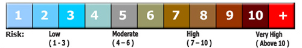

Unit 5: Gases and Atmospheric Chemistry
Activity 1: It’s in the Air
Content
Humans and Air
Human activities have a great impact on the sustainability of the world’s environment. Climate systems are composed of many different components, dynamically interrelating with each other in a state of equilibrium.
Acute and continuous stress to the climate system interrupts the Earth’s fragile climate system and the potential for excessive amounts of pollutants in each of these climate components can affect other segments of the environment. A collapse in one segment produces a domino effect throughout the environment.
Earth’s Climate System
Air quality is a vital component of the Earth’s sustainability and there is a demonstrated need for continued monitoring and further research to minimize negative effects on the environment including: smog, acid rain, transboundary air pollutants, and indoor air pollution.
Urban Skyline and Air Quality
Reflection
Take a close at the above picture and think about the polluted air that is common in so many urban centres. How does the air look in the area where you live? Sometimes, you might ask yourself: Where does the smog come from? How can humans be forgetful of God’s creation, Earth? What can humans do to improve air quality and maintain it? Keep the answers to these questions in mind, when you proceed to an assignment in this activity. |
Sources of Air Pollution
General sources of major air pollutants are the following:
- residential and individuals
- fossil fuels
- transportation
- petroleum
- electricity generation
- industrial energy consumption
- agriculture
- consumer and commercial products
- transboundary air movements
The following is a more specific list of industrial sectors that are significant air polluters:
- iron and steel
- base metals smelting
- pulp and paper
- lumber and wood products
- concrete, cement and asphalt
Source: Environment Canada
Air Quality
The Canadian government has identified three air pollutants which are significant contributors to an individual’s health: ozone (O3) at ground level, particulate matter, and nitrogen dioxide. These pollutants figure in the calculation of the Air Quality Health Index or “AQHI”.

Air Quality Health Index Source: Environment Canada
Environment Canada makes specific recommendations for what individuals should do to minimize health risks when the AQHI is particularly high. These recommendations vary depending on your age and health with regards to sensitivity to air pollutants and respiratory and cardiovascular conditions. They further suggest that people consider reducing or rescheduling strenuous activities outdoors if they experience symptoms such as coughing and throat irritation.
Source: Environment Canada
The Ontario Ministry of the Environment’s Air Quality Index monitors six additional air pollutants: sulphur dioxide, ozone, nitrogen dioxide, total reduced sulphur compounds, carbon monoxide and fine particulate matter.
Source: Ontario Ministry of the Environment

|
To learn more about these topics you may wish to visit the following sites: Environment Canada: Pollution Sources |
|---|
This is a disclaimer. External Resources will open in a new window. Not responsible for external content.
Unless otherwise indicated, all images in this Activity are from the public domain or are © clipart.com or Microsoft clipart and are used with permission.